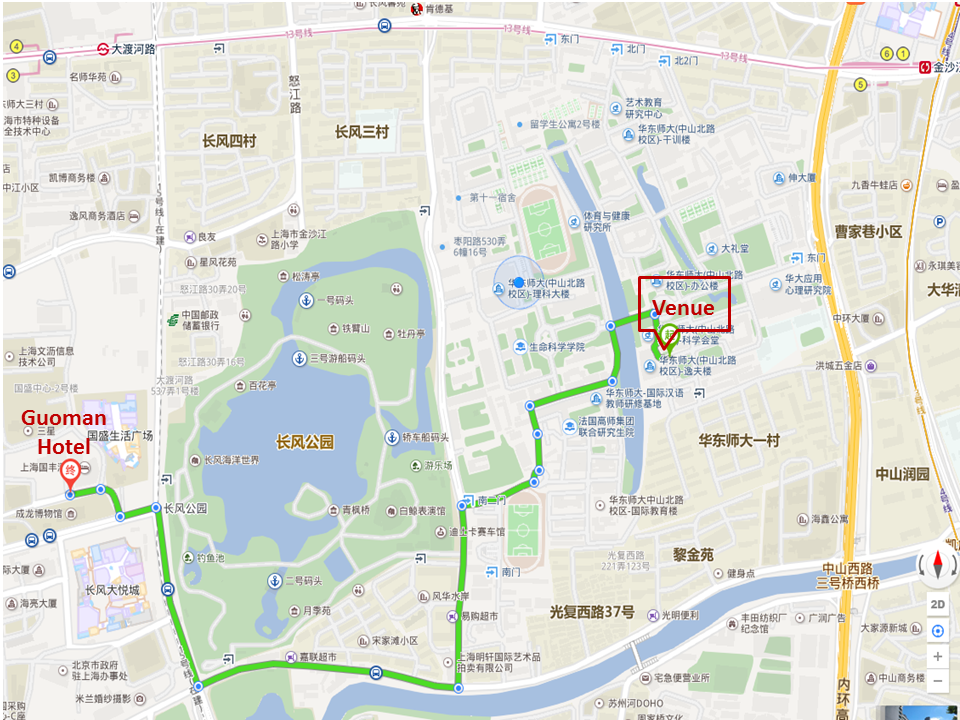

Academic Exchange Center (Lecture Hall)
East China Normal University
No. 3663 North Zhongshan Rd., Shanghai
China
Phone: 021-62601058
Website: https://www.ecnu.edu.cn/

Academic Exchange Center (Lecture Hall)
East China Normal University
No. 3663 North Zhongshan Rd., Shanghai
China
Phone: 021-62601058
Website: https://www.ecnu.edu.cn/
If you arrive at Shanghai Hongqiao Airport or Shanghai Hongqiao Train Station:
You can take a taxi to East China Normal University. It takes about 30 minutes, and costs about 50 Yuan, (8 US Dollar).
You can also take the metro line 2/10 and then transfer to line 3/4/13. The nearest Metro Station is Jinshajiang Road.
If you fly to Shanghai Pudong Airport:
You can take a taxi to East China Normal University. It takes about 1 hour, and costs about 200 Yuan, (32 US Dollar).
You can also take the metro line 2 and then transfer to line 3/4/13. The nearest Metro Station is Jinshajiang Road.
There are numerous hotels that can be booked economically through popular booking sites such as Trivago.com, Booking.com etc. Most hotels near the Metro Station will be convenient for reaching the symposium venue in a reasonably short time. The following hotels are recommended:
Jinjiang Inn (Shanghai East China Normal University)
Address: No.3500 Zhongshan Rd., Shanghai, China
Tel: 021-62859998
Orange Hotel Select (Shanghai Zhongshan Park East China Normal University)
Address: No.3880 Zhongshan North Rd. (Zhonghuan Building), Shanghai, China
Tel: 021-31277887
Guoman Hotel
Adddress: No. 388 Daduhe Road, Putuo District, Shanghai, China
Tel: 021-60958888
Website: http://www.guoman-hotel.com
Huashen Academic Exchange Center
Address: No. 3663 North Zhongshan Rd., Shanghai, China (New YIFU Building)
Tel: 021-62601058
Website: http://www.huashen-ecnu.com


Academic Exchange Center
ECNU
Contact
ECNU Visual Computing Lab
East China Normal University
School of Computer Science and Technology
3663 North Zhongshan Road, Shanghai, China
Email: info2019@vinci-conf.org
Sponsored by:
Proceedings published by ACM: